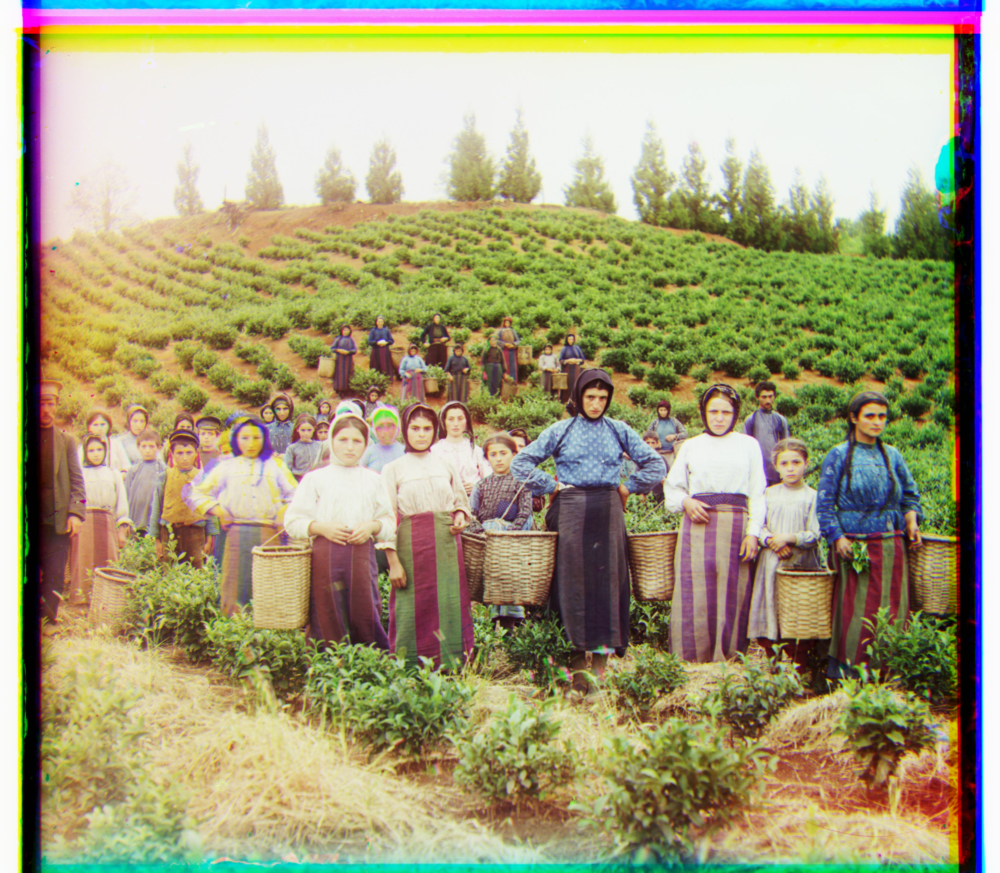

Results
Low Resolution Images

Monastery | G->B (-3, 2) | R->B (3, 2)

Cathedral | G->B (5, 2) | R->B (12, 3)

Tobolsk | G->B (3, 3) | R->B (6, 3)
High Resolution Images

Church | G->B (25, 4) | R->B (58, -4)

Emir | G->B (49, 24) | R->B (107, 40)

Harvesters | G->B (60, 17) | R->B (124, 14)
Icon | G->B (42, 17) | R->B (90, 23)

Italil | G->B (38, 22) | R->B (77, 36)

Lastochikino | G->B (-3, -2) | R->B (76, -8)
Lugano | G->B (41, -17) | R->B (92, -29)
Melons | G->B (80, 10) | R->B (177, 13)

Self Portrait | G->B (78, 29) | R->B (176, 37)

Siren | G->B (49, -6) | R->B (96, -24)
Three Generations | G->B (54, 12) | R->B (111, 9)
Additional Examples
Example 1 | G->B (1, 0) | R->B (2, 0)
Example 2 | G->B (1, 0) | R->B (2, 0)